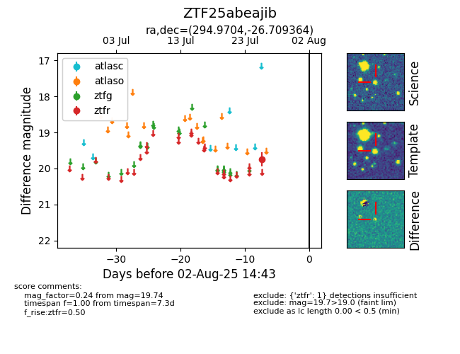

Target ZTF25abeajib at 2025-08-02 14:43, see:
FINK: fink-portal.org/ZTF25abeajib
Lasair: lasair-ztf.lsst.ac.uk/objects/ZTF25abeajib
ALeRCE: alerce.online/object/ZTF25abeajib
alt names
ZTF25abeajib (ztf,fink)
coordinates:
equatorial (ra, dec) = (294.9704,-26.70936)
galactic (l, b) = (13.1256,-21.82353)
photometry
last ztfr=19.74
1 ztfr detections
